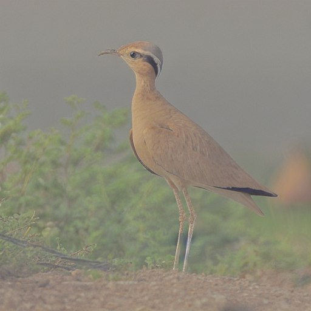
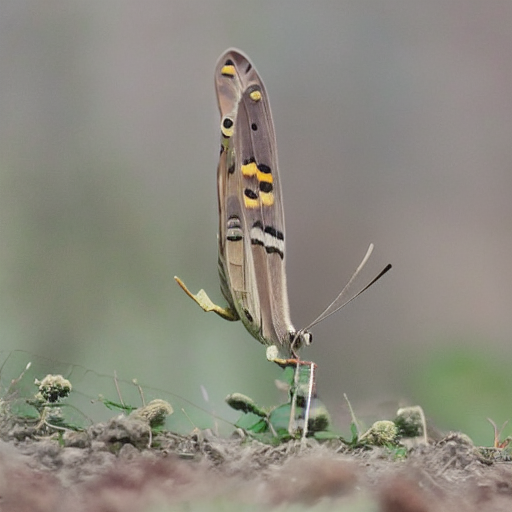
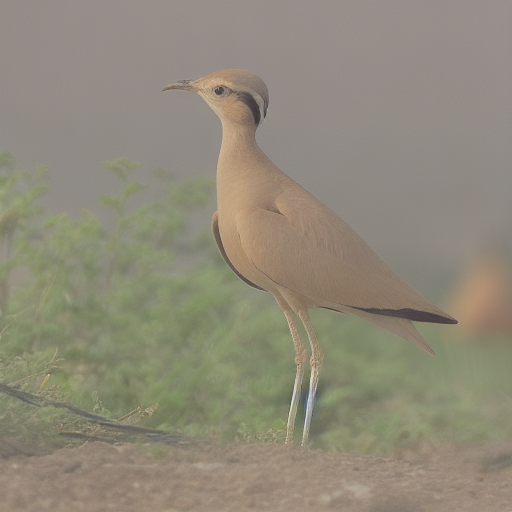
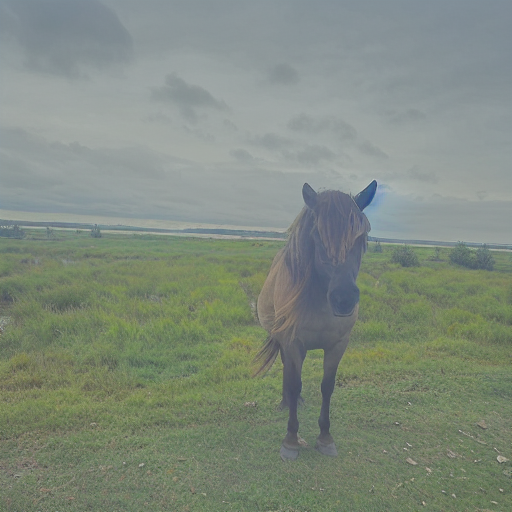
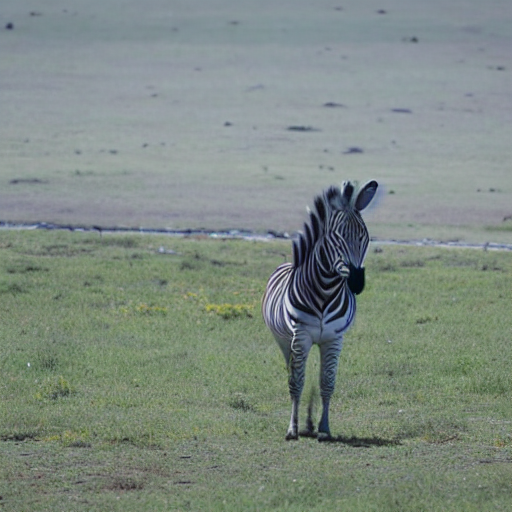
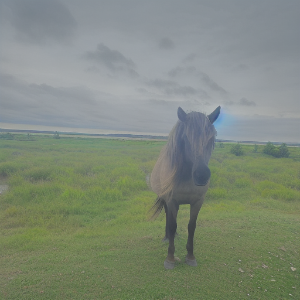
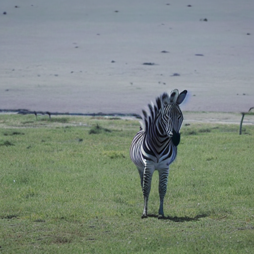
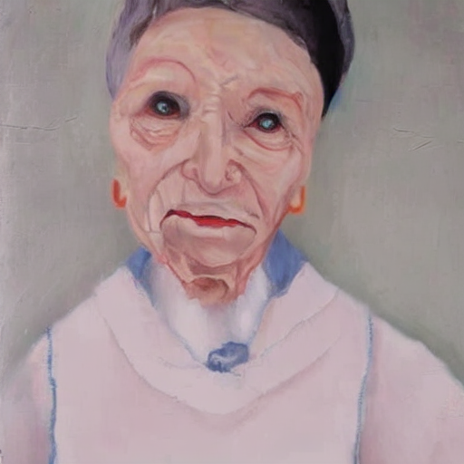
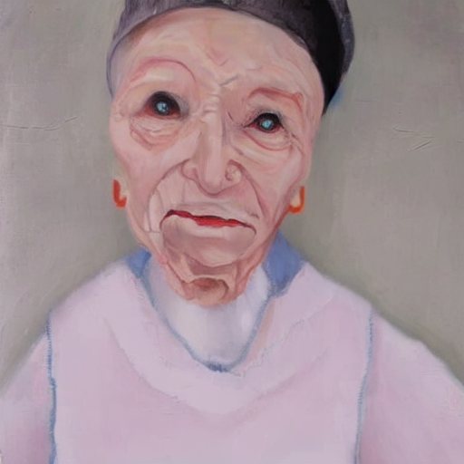

防禦圖

未防禦的編輯

防禦後的編輯
fid_dists 0.1962
fid_lpips 0.2227
fid_psnr 19.1692
fid_ssim 0.7727
fid_clip_img 0.9421
fid_nima 5.1259
fid_cnniqa 0.5829
edit_lpips 0.3716
edit_clip_drop 0.0123
edit_siglip_drop-0.0014
total_seconds 146.0
stage1_seconds 46.3

防禦圖

未防禦的編輯
防禦後的編輯
fid_dists 0.207
fid_lpips 0.2726
fid_psnr 19.4885
fid_ssim 0.7643
fid_clip_img 0.9322
fid_nima 5.1975
fid_cnniqa 0.598
edit_lpips 0.3836
edit_clip_drop -0.0057
edit_siglip_drop-0.004
total_seconds 129.9
stage1_seconds 46.6

防禦圖

未防禦的編輯

防禦後的編輯
fid_dists 0.162
fid_lpips 0.2293
fid_psnr 16.8404
fid_ssim 0.7327
fid_clip_img 0.9399
fid_nima 5.1381
fid_cnniqa 0.5545
edit_lpips 0.3568
edit_clip_drop -0.0069
edit_siglip_drop-0.0037
total_seconds 130.0
stage1_seconds 46.8

防禦圖

未防禦的編輯

防禦後的編輯
fid_dists 0.1782
fid_lpips 0.2306
fid_psnr 17.731
fid_ssim 0.7264
fid_clip_img 0.9434
fid_nima 5.9352
fid_cnniqa 0.5851
edit_lpips 0.2995
edit_clip_drop -0.0189
edit_siglip_drop-0.0042
total_seconds 129.5
stage1_seconds 46.7
防禦圖

未防禦的編輯

防禦後的編輯
fid_dists 0.0824
fid_lpips 0.1234
fid_psnr 20.6741
fid_ssim 0.9178
fid_clip_img 0.9793
fid_nima 4.5015
fid_cnniqa 0.5503
edit_lpips 0.3094
edit_clip_drop -0.0228
edit_siglip_drop-0.0186
total_seconds 130.0
stage1_seconds 46.8
防禦圖

未防禦的編輯

防禦後的編輯
fid_dists 0.1146
fid_lpips 0.1657
fid_psnr 20.9519
fid_ssim 0.8935
fid_clip_img 0.9584
fid_nima 4.6613
fid_cnniqa 0.6008
edit_lpips 0.3242
edit_clip_drop -0.0201
edit_siglip_drop-0.0191
total_seconds 130.1
stage1_seconds 46.8